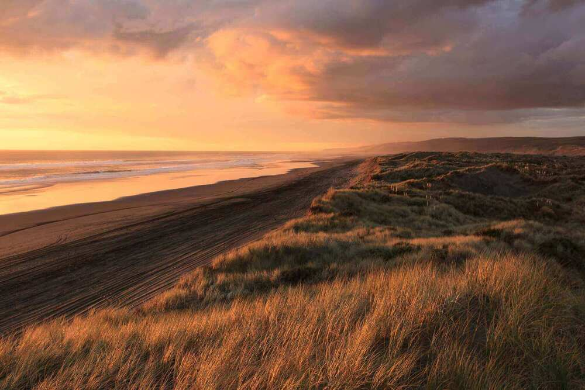
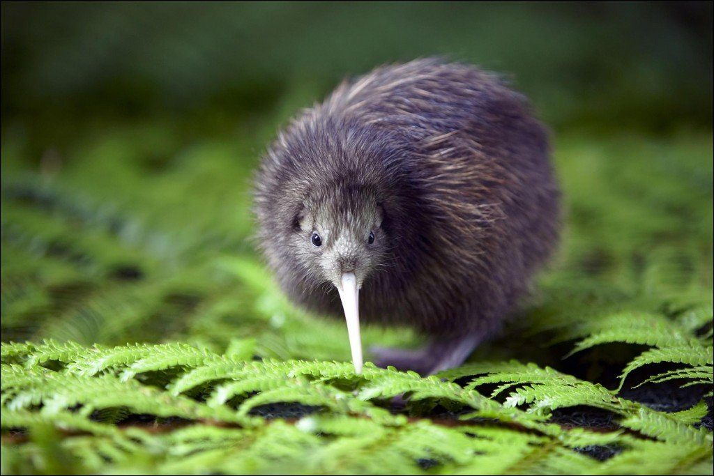
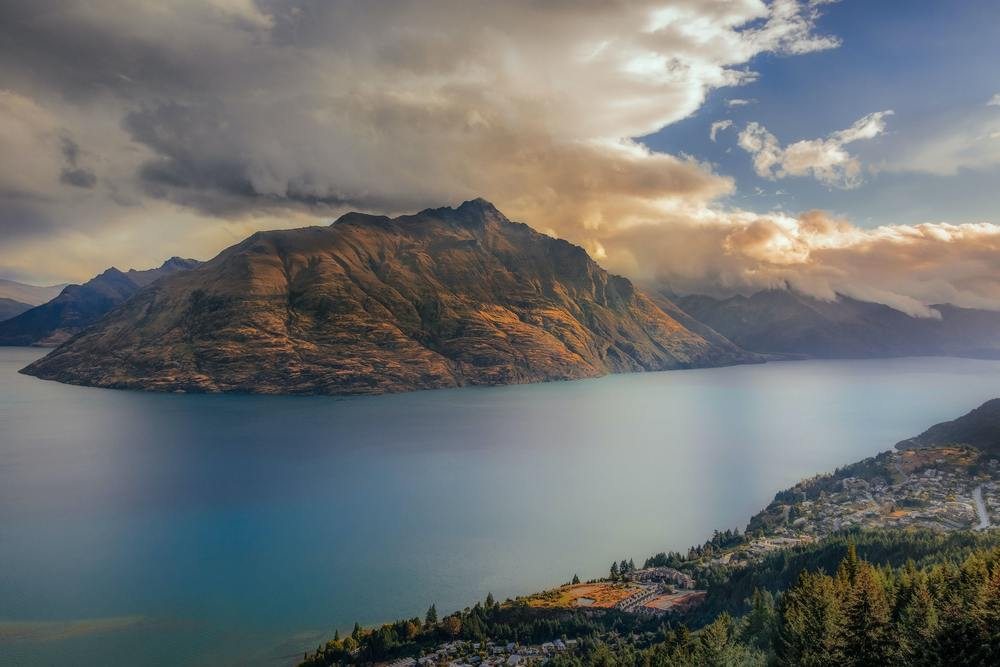
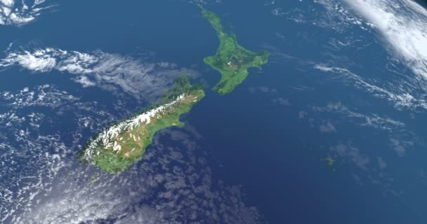
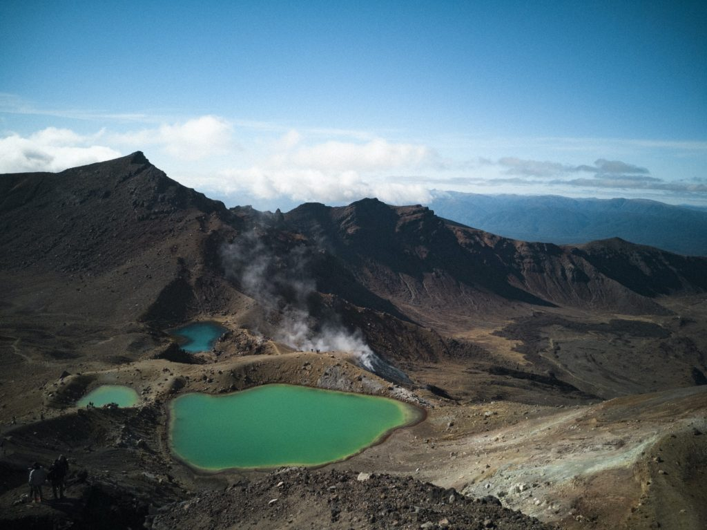

HIGH CONSUPTIOM OF ICE CREAM A few years ago, the United States was the country that consumed the most ice cream in the world. But today, New Zealand has taken over and the amount of ice cream ingested per capita is 28.3 liters per year. In other words, each person, on average, consumes almost 30 liters of ice cream per year! IT IS THE FIRST COUNTRY TO SEE THE SUNRISE  Technically, Samoa (Polynesia) is the first country to welcome the new day, but thanks to the curvature of the Earth, the city of Gisborne on New Zealand's North Island is the first to see the sunrise for real! For this reason, the city is perfect for seeing an unforgettable sunrise in any of its coastal regions. Watch the sun come up over the horizon before anyone else in New Zealand! POLLUTION IS PRACTICALLY NON-EXISTENT  The country is known worldwide as “Green New Zealand”. In addition, you can drink water straight from the tap and fill your lungs with air without fear of respiratory illness. One of the main reasons why there is no pollution is the lack of production plants. Also, plastic bags have been banned from supermarkets – you won't see plastic straws and it's fashionable to have a reusable water bottle. IT IS THE LAND OF THE LONG WHITE CLOUD  So says the translation of “New Zealand” in Maori. There are several explanations for this name, with the majority having their origins in traditional Maori stories. But all, in some way, are linked to the idea that the horizon in New Zealand is normally covered by long, white clouds. The country is also shaped like a long cloud when viewed from space (but maybe that's just a coincidence).  THERE ARE VOLCANOES ON ALL SIDES  Situated in what is known as the “Pacific Circle of Fire”, New Zealand has several volcanoes on both the South Island and the North Island, and there are traces of volcanic activity throughout, although there are areas where this is more obvious. Just to give you an idea, 12 of the country's existing volcanoes are classified as still active, and monitored by scientists, including the iconic Mount Ruapehu, also known as “Mount of Doom” from “The Lord of the Rings”. In addition, the capital, Auckland, sits on a large volcanic field, with approximately 53 volcanoes.